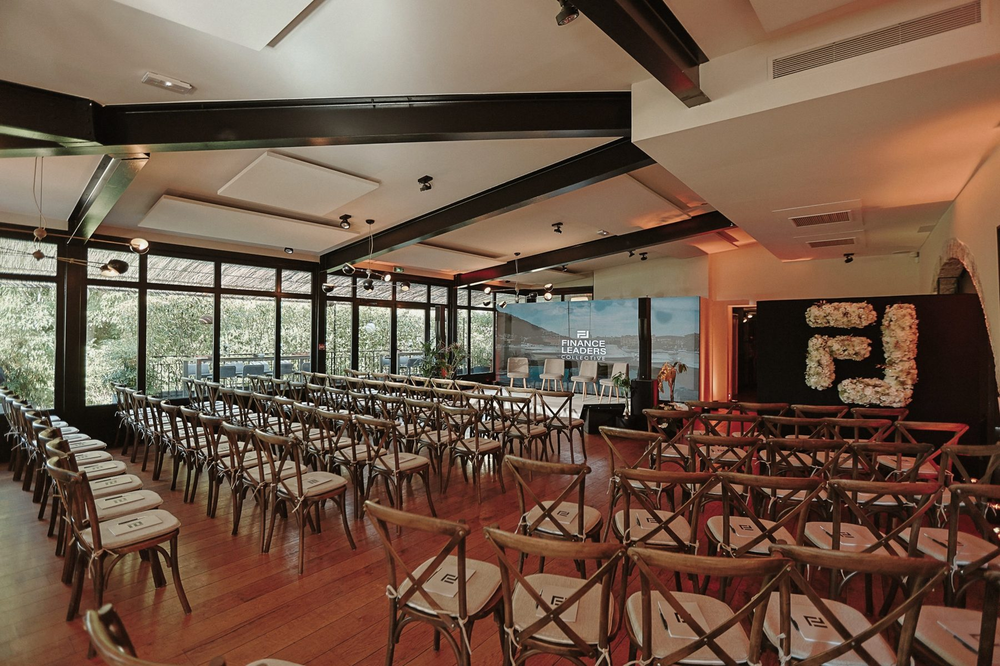
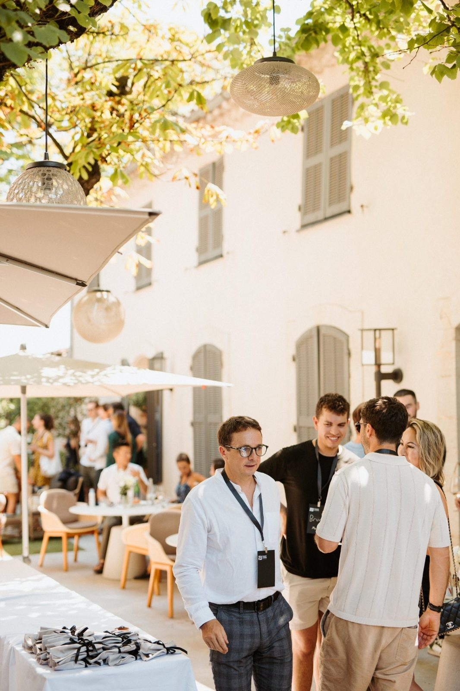
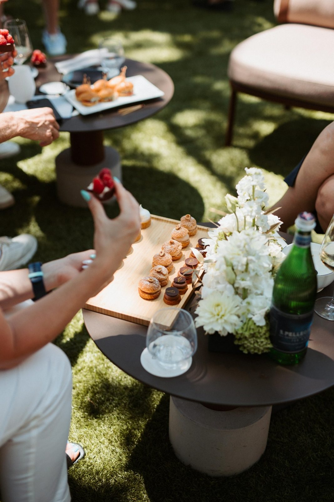
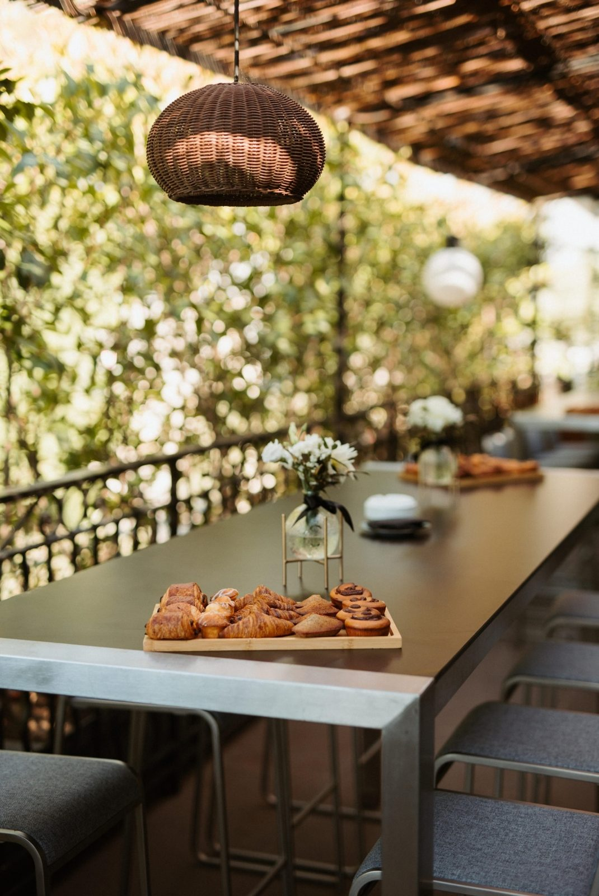

Tres Finance: a conference in a two Michelin star restaurant.
The brief. Tres Finance was launching a subscription club for finance leaders. The event had to match the exclusivity of the audience: intimate, high-end, unmistakably premium.
The craft. While most brands in Cannes booked hotel ballrooms, we found a two Michelin star restaurant that looks like a French chateau, surrounded by manicured gardens. The entire kitchen brigade performed live show cooking for all 120 guests, with the two-star chef personally at the stoves. We had visited in advance to taste and select every course, calibrated so guests would leave energized for the afternoon sessions, not sluggish.
Delivered end to end. Venue sourcing and design, signage, staging and sound, the live Michelin dining experience, a dedicated podcast recording room built on site, photo and video crews, and advance menu testing across multiple visits. When the venue's internet didn't meet our standards, we brought our own Starlink to guarantee flawless connectivity.





"Our most outstanding event to date. It was the best event we've ever done, the perfect blend of venue, content, and experience."Tres Finance